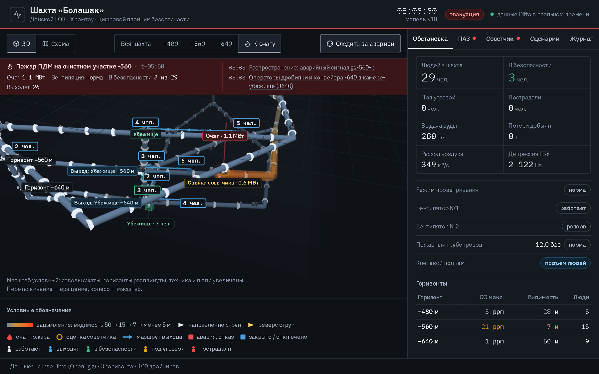
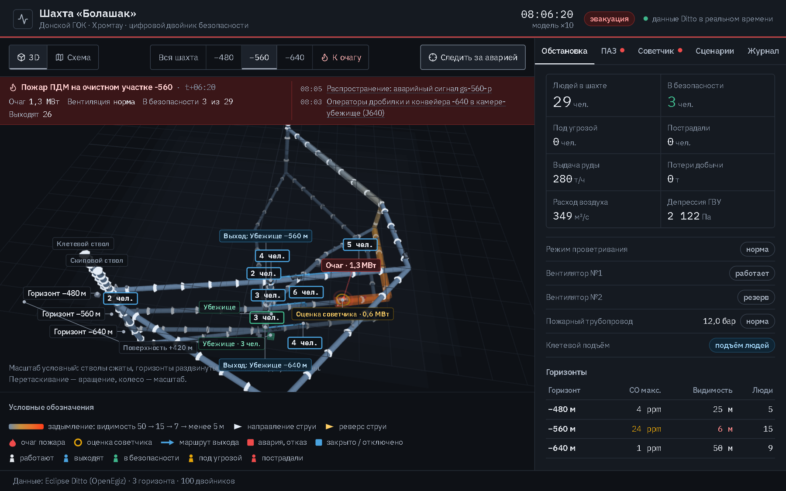
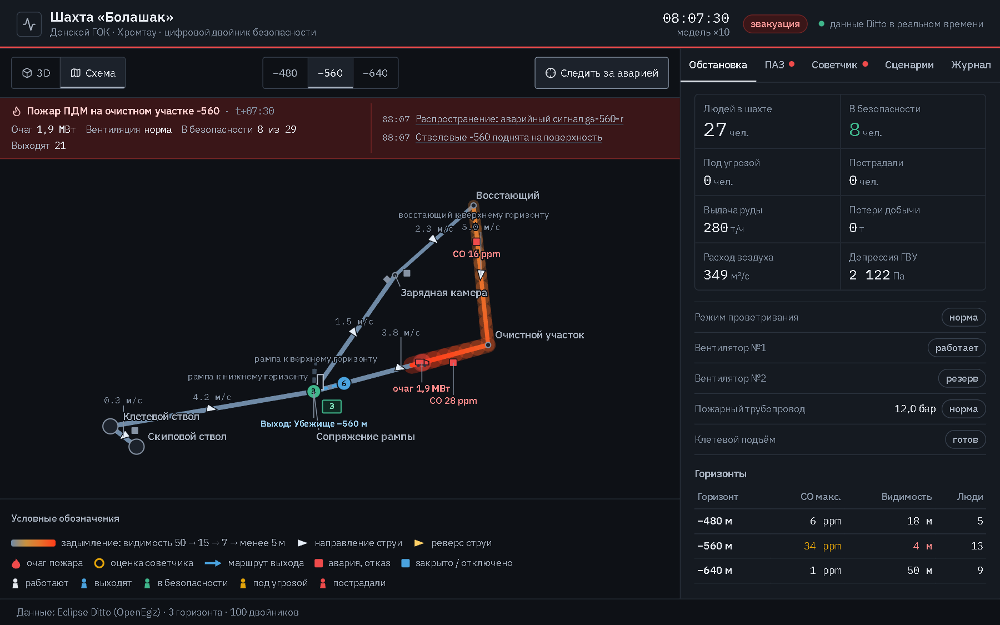
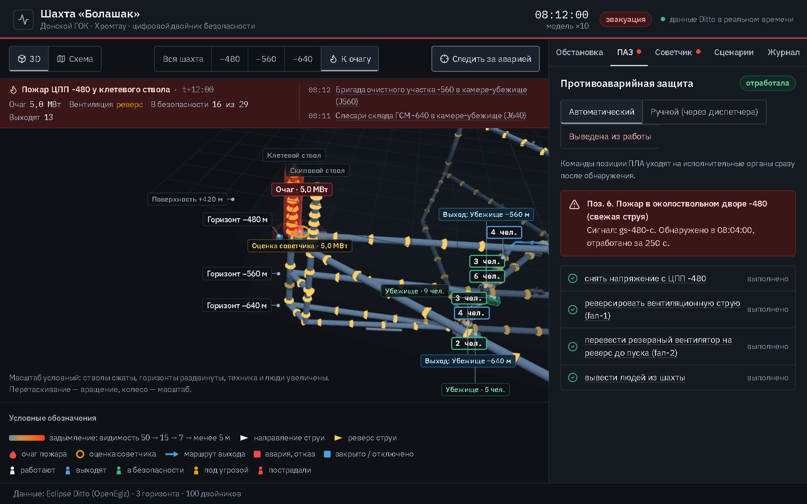
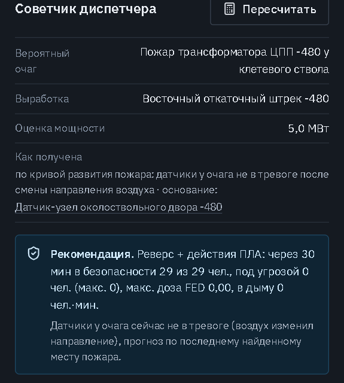
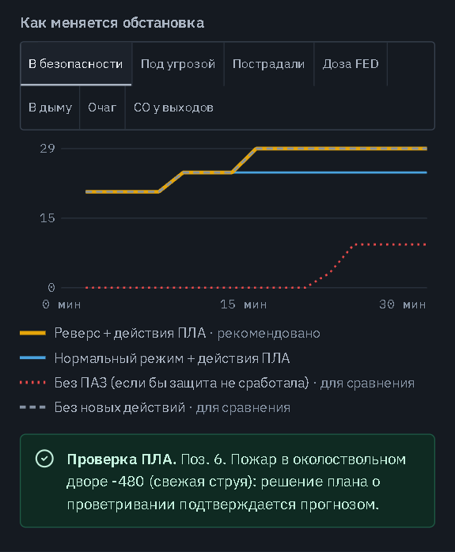
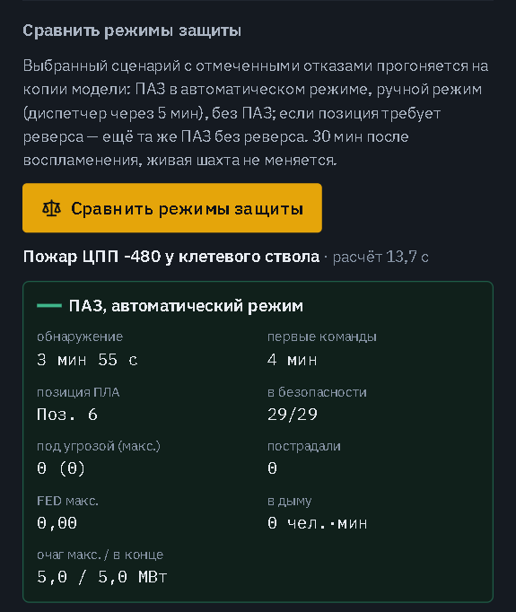
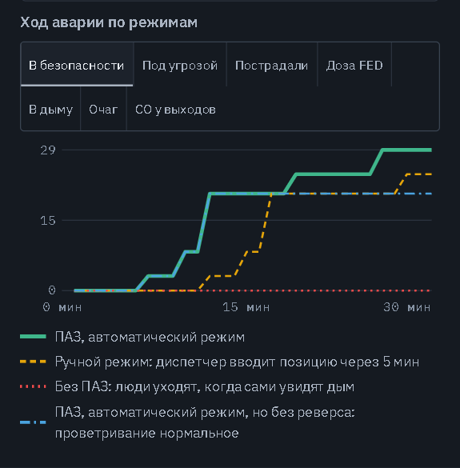
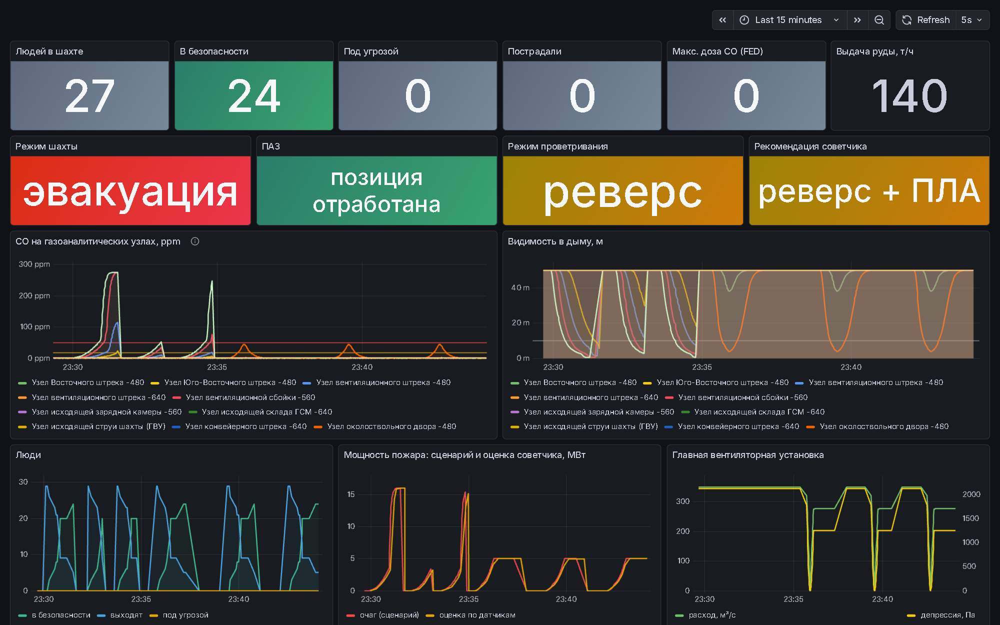
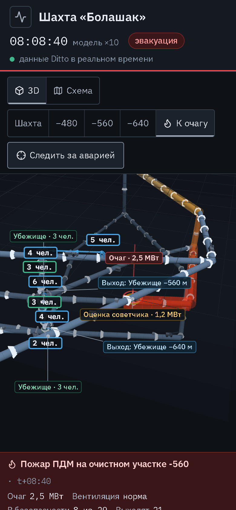

Безопасность и противоаварийная защита подземного рудника
Шахта «Болашак», Донской ГОК АО «ТНК «Казхром», Хромтау, Актюбинская область
erasyucopi313aikyn-tech


3D-модель трёх горизонтов: дым окрашивает выработки, на модели видны очаг, бригады с маршрутами выхода, убежища и техника.

Мнемосхема −560: направление и скорость воздуха, CO на датчиках, задымлённая выработка, маршрут бригады к убежищу.
desiredProperties; ПАЗ ждёт фактического состояния и отмечает отказы.




| Сценарий | С автоматикой ПАЗ | Без неё |
|---|---|---|
| Пожар ПДМ −560 | 29 из 29 в безопасности, доза FED 0 | ручной режим: FED 0,08, 39 чел.·мин в дыму; без ПАЗ FED 0,59 |
| Пожар ЦПП −480 | реверс по позиции 6: 29 из 29, 0 чел.·мин в дыму | та же ПАЗ без реверса: 90 чел.·мин в дыму, 20 из 29 за 30 мин |
| Пожар конвейера −640 | очаг не выше 1,8 МВт | дренчер и дверь отказали: 7,0 МВт; без ПАЗ 14,0 МВт |
| Склад ГСМ −640, отказ датчика склада | советчик уточняет позицию 0 → 1, клапан закрыт, 0,1 МВт к 30 мин | без ПАЗ: 15,2 МВт через 30 мин |
| Пожар ПДМ, отказ бортовой системы и датчика | обнаружение через 285 с: 6 человек в дыму, FED 0,52 | то же при любом режиме: решает скорость обнаружения |
Числа — со стенда сравнения: запрос study в двойник control прогоняет сценарий в режимах «авто», «ручной», «без ПАЗ» (если позиция ПЛА включает реверс — ещё «авто без реверса») на копии модели; результат в двойнике advisor, одинаковый при каждом запросе.

make mine-check проверяет двойники и иерархию, ход модели, данные в InfluxDB, дашборд, пульт и прокси, затем прогоняет сценарий, проверяет варианты советчика и его сброс в норму и запускает стенд сравнения на показательной аварии.Ограничения
